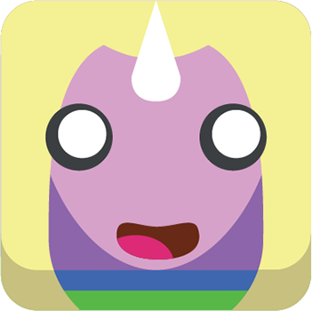
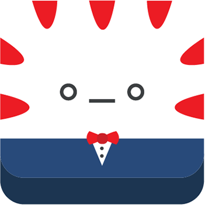
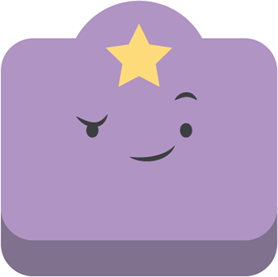
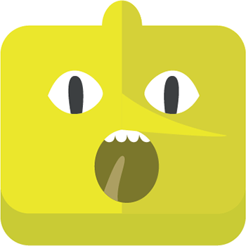
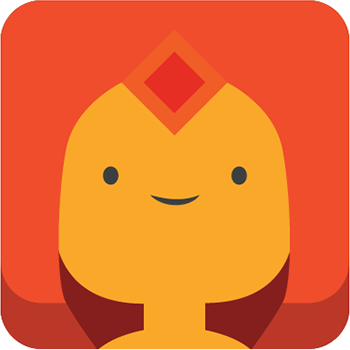
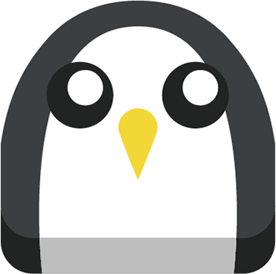

Personajes secundarios
-

Arcoiris
Es una unicornio arcoíris pareja de Jake y amiga cercana de la Dulce Princesa, conocida por su personalidad dulce, tranquila y cariñosa. Puede volar, cambiar de color y volver invisibles los objetos o personas que toca con su luz, además de hablar coreano. Suele aportar un tono sereno y maduro frente a las locuras y aventuras de Finn y Jake.
-

Mayordomo Mentita
Trabaja al servicio de la Dulce Princesa en el Dulce Reino y aparenta ser un mayordomo amable, educado y servicial. Sin embargo, detrás de esa fachada tranquila esconde un profundo conocimiento de las artes oscuras, la magia y los demonios de Ooo. Es un personaje enigmático que genera tanto respeto como cautela entre quienes conocen su lado oculto.
-

Princesa Grumosa
Es la princesa del Espacio Grumoso, conocida por su actitud dramática, caprichosa y confiada, aunque muchas veces termina metiéndose en líos por su propio orgullo. Habla con un tono muy particular y suele alternar momentos de indiferencia con otros de gran sinceridad. A pesar de su fachada despreocupada, demuestra ser leal a sus amistades y más astuta de lo que aparenta.
-

Limon Agrio
Creado por la Dulce Princesa como un experimento, es el gobernante del Castillo de Limonagrio y se destaca por su carácter explosivo, rígido y extremadamente gritón. Su obsesión con las reglas y el orden lo lleva a tomar decisiones autoritarias y a chocar constantemente con quienes lo rodean. Aun así, su historia refleja la soledad y la complejidad de intentar encajar y gobernar.
-

Princesa Flama
Gobernante del Reino de Fuego, es un personaje poderoso, impulsivo y de carácter fuerte, con un cuerpo compuesto literalmente por fuego y llamas. A lo largo de la serie pasa de ser vista como una fuerza destructiva a convertirse en una líder justa y decidida que busca cambiar las tradiciones violentas de su reino. Su relación con Finn la ayuda a aprender a controlar sus emociones y a confiar más en los demás.
-

Gunter
Es el pingüino más cercano al Rey Helado y uno de los personajes más recurrentes y misteriosos de la serie. Aunque parece un simple pingüino travieso que roba objetos y muerde cosas, con el tiempo se revela que oculta una naturaleza mucho más antigua y cósmica. Su comunicación se basa en su clásico "wenk", pero su presencia es clave en la historia del universo de Hora de Aventura.